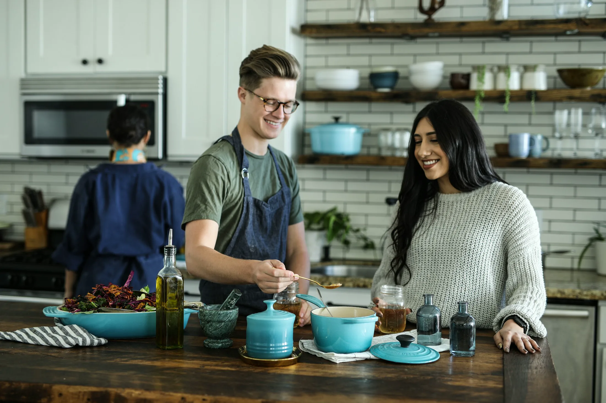
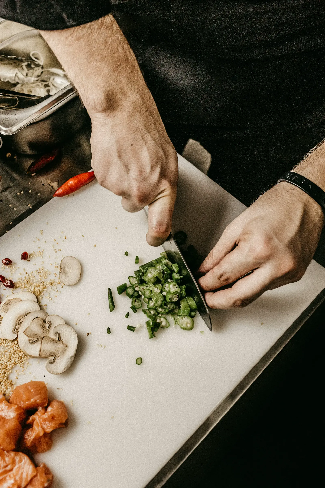
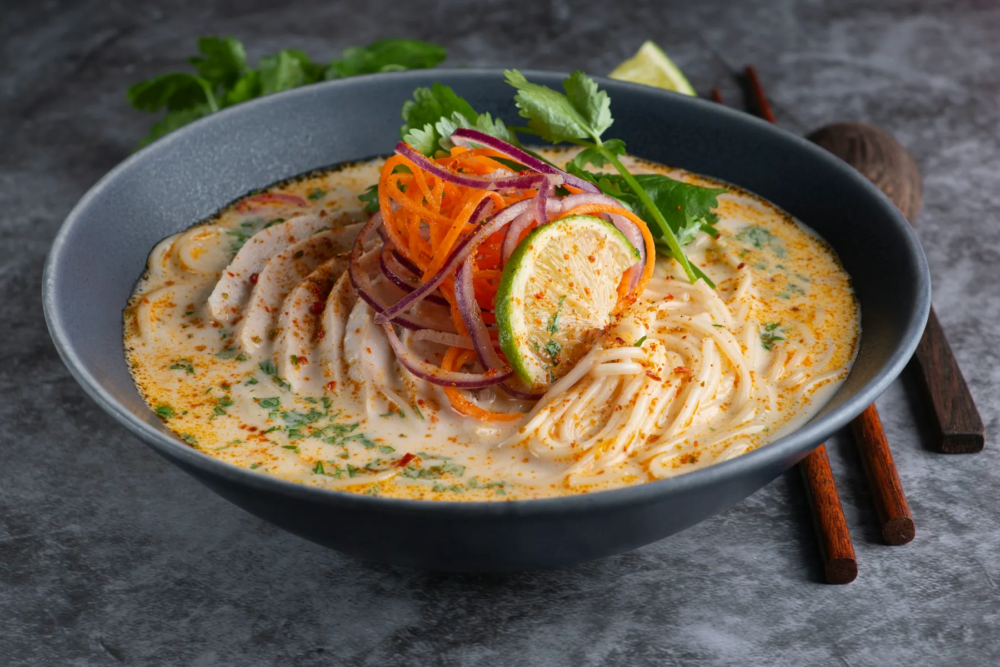
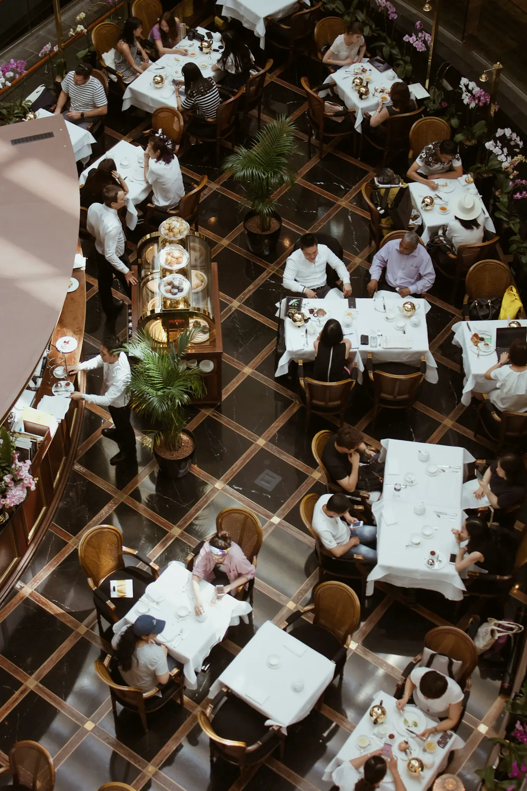
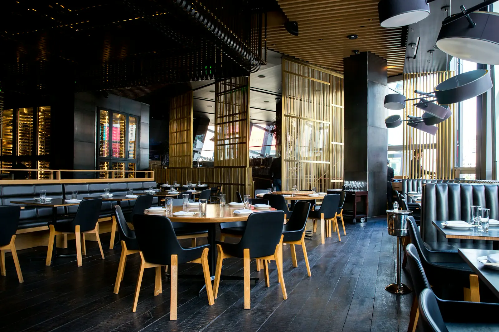
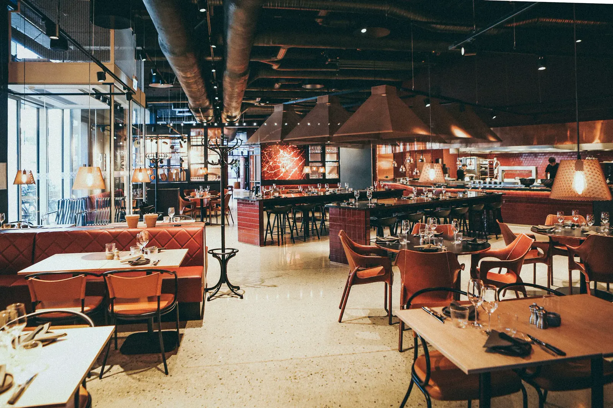

Excelência em cada ritual
Ousado, preciso e
com artesania culinária
inesquecível
Acreditamos que a verdadeira maestria não está apenas na precisão do corte ou no equilíbrio do tempero, mas na memória que cada prato desperta. Nossa jornada nasce de uma curiosidade constante, honrando os ritmos antigos das tradições culinárias asiáticas enquanto abre espaço para novas leituras. Cada ingrediente é escolhido com intenção, cada prato composto com olhar de artista, criando uma experiência gastronômica provocante e profunda.

Kenshō é mais que comida — é cultura à mesa
Jantar aqui é um ritual. É o encontro entre história, arte e presença compartilhada à mesa. Convidamos você a desacelerar, saborear e se conectar, não só com os sabores no prato, mas com o próprio momento.





★★★★★
Palavras de carinho
“Jantar no Kenshō foi como entrar em uma história cuidadosamente composta. Do primeiro prato ao último, cada detalhe parecia pensado e refinado.”Aanya R. Avaliação de cliente